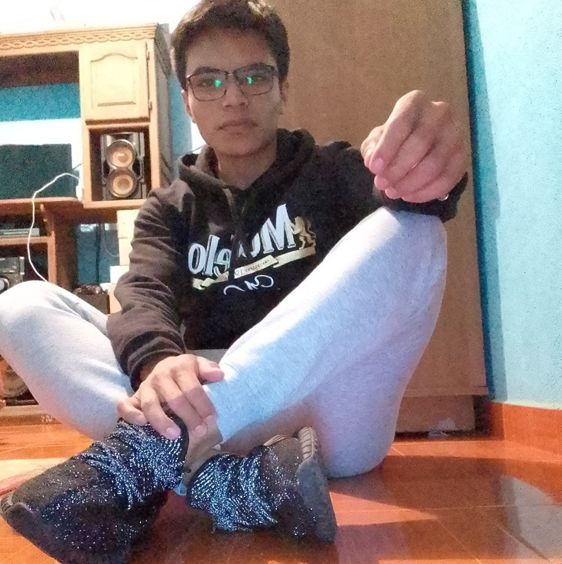
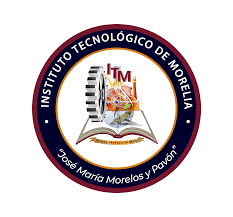
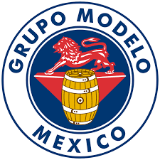

En este blog encontraras proyectos sobre los que he trabajado y algunos en los que aun trabajo
Algunos trabajos y proyectos que he realizado para la escuela y en mis tiempo libre

Hola Mi nombre es Diego Omar Valencia Escobedo
Soy un estudiante de la carrera de ingenieria en sistemas computacionales en el Instituto Tecnologico de Morelia
Me gusta mucho el tema de la programacion en varios lenguajes y para varias aplicaciones.

Estoudio la carrera de ingenieria en sistemas desde el 2019 en el instituto tecnologico de Morelia, Reconocida como una de las mejores escuelas de ingenieria del pais, Actualmente curso el 6to. semestre.

Aparte de esto tambien trabajo en Grupo Modelo de Patzcuaro como repartidor de cerveza desde el 2017
Si quieres saber mas sobre mi pulsa
aqui